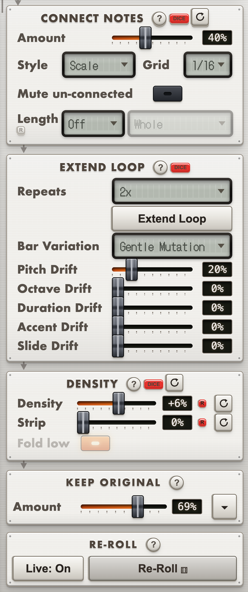

MutationStation
Lock the notes that work, re-roll/mutate the rest, and discover acid lines you would not have usually written.
"Controlled randomness" is the creative philosophy behind both MutationStation and Chordinator. When the workflow of writing music note-for-note runs dry, it helps to reach for tools that pull you out of structured patterns of composing. Happy accidents are among the most satisfying part of making electronic music, and this sequencer was built with exactly that in mind. MutationStation is an acid-style mutating step-sequencer, able to create entirely new sequences and to mutate your existing MIDI ideas — such as pulling variations from an existing bassline or melody.
At the core of the workflow is the Elektron-style ability to lock certain notes and let only the rest be mutated. You control how random the mutation is, with sliders and parameters as well as preconfigured algorithms that decide the style of mutation. MutationStation also lets you set a probability per pitch, opening up forever-evolving generative sequences.
MutationStation takes a line you already have — drawn in, dropped in as a MIDI clip, or pulled live from Ableton — and rolls new versions of it. You set how far the pitch moves, how the rhythm shifts, and where accents and slides land. Audition takes until one is right, then drag it onto a track.
Already purchased? Manage on Gumroad ↗

Controlled randomness
A randomiser that touches everything is a novelty. What turns it into a writing tool is being able to say which parts are already right.
MutationStation uses the lock system Elektron sequencers made famous. Click a note to pin it and every generator leaves it alone: pitch, rhythm, octave, length, accent and slide all move around it. Lock the root and the turnaround, re-roll the rest as often as you like, and the phrase keeps its shape while the detail keeps changing.
Auto-Lock picks those notes for you. Structural weighs seven signals together: recurrence, metric weight, accent, bar openers, note length, low register and isolation. When you want one signal to decide instead, rank by downbeats, offbeats, accents, long notes, low notes, recurrence, or the phrase corners that hold a bar together.
Or mutate one stretch and leave the rest alone. Drag anywhere in the piano roll to mark a range, and from that moment every mutation device only reshapes what is inside it. Move any slider and the notes outside your selected area come through unaffected. Press Esc to unmark.
Every roll runs on seeded dice, so the take you liked is the take you get back, and you can re-roll one panel at a time while the rest stays put.

Where the line actually comes from
34 pitch strategies, from the simple (Random, Proximity, Root/Fifth) to measured acid and techno voices like Acid Trip, Hypno Root, Seventh Anchor, Lead Line and Offbeat Anchor. Many are measured from real bass and synth loops, so they move the way basslines actually move rather than like a random-note generator. Amount decides how much of the line they are allowed to rewrite, and scale, root and range set the boundaries of where the new notes may land.


Slides and accents the way a 303 does them. Octave, Accent and Slide each get their own amount, their own step pattern and their own lock, so you can hold the accents you have and re-roll only the glides, or pin the octave jumps and let everything else move. Connect Notes fills the gaps between them with passing tones, in scale or chromatic.


Take the rhythm off a clip · including an audio clip
↓ Rhythm Import takes the timing of whatever clip is currently selected in Ableton and lands it in the roll as a monophonic line on the root note. This is very useful for mutating an existing pattern you already have in Ableton. Click a clip in Live, press the button, and the rhythm of your MIDI or audio clip is now the rhythm of your MutationStation sequence.
This also works on audio clips, not only MIDI ones. Live's scripting cannot hand an app the audio, so MutationStation reads the sample off disk, decodes it, and finds the attacks itself, by spectral flux: how much the spectrum grew from one frame to the next, which is what an attack is. Hit strength becomes velocity, so velocity is baked into the sequence too.
Feature Summary
- Mutate a line across pitch, rhythm, octave, note length, accent and slide. Each has its own amount, and each works independently of the others.
- A note pool you can weight. Twelve keys decide which notes mutation may reach for, and a % panel behind them decides how often each one comes up, setting a probability value for each pitch individually.
- 40+ rhythm patterns. Four-on-the-floor, rolling 303, tresillo, dub, house basslines, hypnotic rolls and two-bar call-and-response cells, with a density knob to thin or thicken any of them.
- Extend Loop. Double or quadruple the loop and let each extra bar drift away from your first bar, with pitch, octave, duration, accent and slide each on their own amount.
- Turnaround Emphasis. Every one, two or four bars, the last notes of the group get boosted odds of being mutated, giving the last two notes of your sequence a stronger chance of changing. A useful melodic writing tool in house/techno music, where variation usually lands at the end of a phrase.
- Keep Original. The last link in the chain: after every other panel has had its say, each unlocked note gets a chance to snap back to how it started. A way to let some of the take survive heavy mutation without locking anything.
- A real piano roll. Draw, drag, resize, set velocity, with a History strip that keeps every take you generate so you can rewind to a direction you liked, plus + Snapshot to bank one you want to come back to, settings and all.
- Presets and Find Similar Rhythm. Save sequences and knob recipes, and scan your saved sequences for ones that groove like the one on screen.
- 50 factory 303-style sequences ship with the app, kept separate from your own library.
- Modulation lanes for Live. Draw up to eight per-step lanes, each driving one parameter on the selected device as smooth 14-bit automation. Stream them live, or Send to Live to build a new Session clip carrying both the notes and the modulation as clip envelopes, or Replace clip to overwrite the one you have selected. One-click presets drop a shaped curve across three parameters at once, and you can save your own alongside them. Modulation record works the other way: arm a lane, move a knob in Live, and it traces the lane from your move.
- Play and record straight in, from a MIDI keyboard or a DAW track: arm Record and notes land on the grid as you play, Overdub decides whether a new note replaces or builds on the last sequence, and Recapture rescues the loop you just played without ever having armed anything. Chord In and Root In read the same port to transpose the pool from a played chord or a played note, letting you transpose the sequence live.
- Follow your DAW's clock, or run on your own. Pick the port your DAW sends MIDI clock on and the app follows its tempo and its relocations; pick Internal and it plays by itself.
- Hints and a manual in the window. Every panel explains itself where you are standing, and the full manual is available from the app.
- And more. See manual for full feature list.
Why standalone
MutationStation runs as its own app, not a plugin, and reaches your DAW the way a hardware groovebox would: as a MIDI device you record from or drag takes out of, the same route any outboard sequencer uses. That separation is deliberate. If your DAW crashes, MutationStation and every take in its History strip are untouched, and if MutationStation goes down, your DAW stays alive.
Requirements
macOS on Apple Silicon (M1 or later), and any DAW that takes MIDI.
Signed and notarised for macOS, so it opens with a normal double-click. No security warning, nothing to click past.
Version 1.0.0
Getting it into your DAW
The app appears to your Mac as a MIDI device called
MutationStation. Make a track listen to it, turn
on input monitoring, and play. Or skip all of that and
drag a take out onto a track as a .mid
clip, which needs no setup at all.
Particular integration with Live
A control script ships alongside the app, one for MutationStation and Chordinator combined. Install it and you get ↓ From Live, which pulls the clip you are looking at straight into the sequencer, ↓ Rhythm Import, which takes just the rhythm of whatever clip Live is showing, plus spacebar transport, so the app's transport key starts and stops Live itself.
Going the other way, Send to Live and Replace clip write a Session clip back out, with notes and, if you have drawn any, modulation lanes as clip automation. A plain MIDI drag remains the notes-only route for any DAW.
Control it from MidiMirror
MidiMirror can switch a controller into JamWare mode and hand it straight to MutationStation: every knob, fader and key fills with this app's own parameters, named, with live values, so the MidiMirror panel becomes MutationStation's front panel rather than a MIDI map you built by hand.